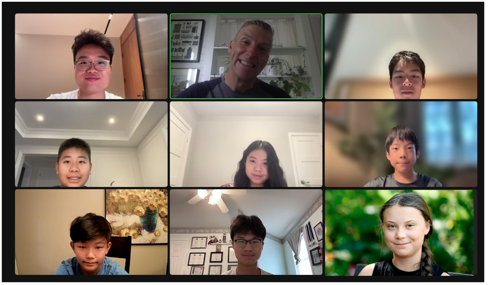

You can expect to learn basic programming with Python and use Python Pandas to clean, prepare and analyse data. Students will use the Titanic data set to determine if women and children really did get on the life boats first. Students will also indulge their creativity by writing out their analysis to a graphical web page with an SVG graphic. Their Python generated web analysis will be hosted on Github and distributed to the WWW using free Github Pages. Finally, students will be introduced to a big dataset of 5 million sales records to demonstrate how Python and Pandas can quickly analyse data too big for a spreadsheet program.
Mr. Hoel taught computer science and worked in software for 30 years. He is now mostly retired and enjoying teaching small numbers of students on zoom.
Daily notes
Day 1
Objecives
In this class, you can expect to learn how this course will work, where to store you work locally and online and how to get started programming Python using the Idle code editor.
Process
Welcome and get to know your teacher and classmates
What hardware do you have? Did you download Python 3.11.4? Do you have a Github account?
Files and folder organization (where will I store my files?)
Making my first 'Hello World' program with Idle source code editor
Learn basic Python syntax and language by making a short program
Homework: Upgrade your program to look good and add functionality. Show and tell tomorrow.
Teacher summary
Great to meet 8 wonderful students from around the world! Special thanks to Elva for getting up at 6 to be with us from the Mountain time zone in North America :-) Also, thanks to Aaron, William and KC for their excellent participation. Today we learned the basics of data types, variables, data type casting using int() and str(). Basic math operations and string concatenation was introduced. We also learned about using built in Python functions like print(), round() and input(). Finally, we built a short program using if, elif, else statements to receive data from a user and send them back information based on their input.
I look forward to seeing your upgrades to the simple program we made today in tomorrow's class.
Day 2
Objecives
In this class, you can expect to review basic programming concepts using Python and learn how to use repetition and modularization to make more involved programs that are easier to read and debug as well as reusable. You will also learn the 3 categories of errors you will encounter when programming.
Process
Questions from Day 1
Show and tell time. Who wants to show off their homework?!
Create a function that incorporates repetition and a list variable
Upload day1 and day2 code to Github
Homework: Upgrade your program to look good and add functionality. Show and tell tomorrow.
Teacher summary
Today we learned some tough concepts. We examined how to create a function that receives data and returns a value, reviewed the list data type, as well as looking at 2 types of for loops and a while loop. At the end of class I assigned uploading your day1.py and day2.py to Github. I will check your Github accounts for homework. If you are having trouble, please contact me (mdjhoel@gmail.com).
Day 3
Objecives
In this class, you can expect to review functions, lists and looping in Python. You will also learn how to use file input and out in Python and work with our titanic dataset. You will also learn the 3 categories of errors you will encounter when programming (syntax, run time and logic).
Process
Questions from Day 2
Please send me your github handle in the chat.
Review functions, lists, for and while loops.
Intro to file input (open(), readlines(), close()) using titanic.csv
Create a function that incorporates repetition and a list variable
Upload day3 code to Github
Homework: Upgrade your program to look good and add functionality. Show and tell tomorrow.
Teacher summary
Today we did quite a bit of review using the Python shell. Afterwards we got to work and finally got to play with the Titanic data. We learned how to open, use readlines() to transfer file data into a list and close the file. We also learned how to explore the data by using list indexes. Lastly we created a custom function to pass in a list and a number and print out data. We were able to use the .split() function to convert our string data into a temporary list and create better output for our users. If any of this is confusing, please contact me (mdjhoel@gmail.com).
I'd like to recognize our super participants: Aaron, KC and William today. I encourage everyone to get involved, ask questions and make mistakes. We are a friend community and participating is the best way to learn.
Day 4
Objecives
In this class, you can expect to review file input, for loops and functions. New topics include how to use a game loop (while) and the input() function to create a user interface. You can also expect to learn how to create an algorithm to calculate the number of kids that survived the Titanic disaster.
Process
Questions from Day 3
Please send me your github handle in the chat. I forgot to record last class!
Review file input, functions and for loops.
Use a while loop and input() to create a user interface
Create a sequential search function to calculate % of kids that survived the Titanic
Upload day4 code to Github
Homework: Upgrade your program to look good and add functionality. Show and tell tomorrow.
Teacher summary
We started with a Python shell review of the split() built in function and defining and calling functions. The main event was opening the titanic.csv file and building an algorithm to determine the number of kids (under 16) that survived the tragedy. Our algorithm was pretty straight forward, but implementing it in Python required multiple steps of debugging and making sure all our data types worked well together.
I want to thank all the superstar code debuggers and uber participants today. Shout outs to Aaron, KC, William, Daniel and Sam.

Day 5
Objecives
In this class, you can expect to review data type casting (str(), int(), float) and our kids algorithm. New topics include creaing an general algorithm to solve the question of Women and Children first. Finally, we will add a game loop (while) and the input() function to create a user interface.
Process
Questions from Day 4
Review data type casting and other built in functions.
Use a while loop and input() to create a user interface for kids algorithm.
Create a general algorithm to calculate % of men and women that survived the Titanic
Upload day5 code to Github
Homework: Upgrade your program to look good and add functionality. Show and tell tomorrow.
Teacher summary
A good week of classes learning Python and coding basics was concluding with answering our data science question: Was it women and children first on the titanic? According to our algoithms (74%, 59%, 19%) it certainly seems that way. That said, Aaron brought up a good point when he noticed that we were not excluding children (which we defined as < 16) from our analysis of women and men and the fact that there is missing data in the database. All in all, I would call the week and Day 5 a success. Lot of good questions and comments from Aaron, William, KC and Daniel (who stayed behind for help fixing his code - bravo!). Anyway, make sure you contact me (mdjhoel@gmail.com) if you are too shy to speak in class and need help.
Day 6
Objecives
In this class, you can expect to learn basic HTML and SVG tags and attributes and learn how to write them to an html file from your existing Python program.
Process
Questions from week 1?
Presentation is best using the web (accessible, beautiful and it is what people expect). Show example.
Upgrade basic html with SVG showing women, children and men (svg, rect, text, line) using idle editor.
Time permitting, write out html svg from Python program
Homework: Upgrade your presentation to look good and add functionality. Upload to Github. Show and tell tomorrow.
Teacher summary
Today we learned the basics of html and svg tags to make a presentation of our analysis findings. For the most part it seemed relatively simple and fun compared to non graphical Python :-) Good paricipation again from Aaron, KC, William and Anny (who stayed after to ask some great questions).
Day 7
Objecives
In this class, you can expect to review basic HTML and SVG and learn basic CSS to make your presentation look good.
Process
Questions from Day6
Save day5.py to day7.py and clean up Python (remove UI and add variables to file output)
Write out upgraded HTML SVG and CSS from Python program
Homework: Upgrade your presentation to look good and add functionality. Upload to Github. Show and tell tomorrow.
Teacher summary
Fun class today playing with CSS to make our analysis presentation look good. We learned the basics of CSS syntax and styled our SVG rect tag (see below). Special thanks to Aaron for debugging and KC and Daniel for finding interesting differences between how browsers render HTML, CSS and SVG (Safari is weird apparently). Please work on your index.html to make it beautiful as tomorrow will be our last day for the Titanic database.
Day 8
Objecives
In this class, you can expect to review CSS to complete our Titanic project by updating our Python program to write out our HTML presentation for our analysis. We will also prepare for our look at big data by downloading a giant CSV containing 5M sales records and the Pandas library.
Process
Questions from Day 7
Save day5.py to day8.py and clean up Python (remove UI and add variables to file output)
Download big data file to your Desktop/titanic folder
pip3.11 install pandas - from terminal.app (Mac) or command prompt (PC)
Show how to do Titanic analysis more easily with Pandas
Teacher summary
Today was a complicated day with a number of problems including installing Pandas Python library using pip3.11 and downloading our big data file. In the end we were able to introduce Pandas and show it working and all students were able to do this. If you are unable to download the big file due to VPN or Google blocking issues, use this link to the file on file.io. Many thanks to Aaron, Daniel, and KC for excellent participation today. HOMEWORK: update your index.html with cool CSS styles and upload it to Github. I will take a look before class tomorrow and showcase the top 3 web pages :-) Good luck!
Day 9
Objecives
In this class, you can expect to learn the basics of Python Pandas to work with big data and do analysis.
Review Titanic.csv to look for missing data for cleaning (Age!)
Better Titanic analysis with Pandas (timeit,single function,df.dropna() for kids)
Teacher summary
Great class today! After reviewing and recognizing some HTML,SVG and CSS work, we demonstrated that Pandas can accomplish data analysis with a fraction of the code of vanilla Python, albeit more slowly. Great participation from Aaron, Anny, Daniel, KC and William.
Sam produced a wonderful web page documenting his results during the Titanic project.
Day 9
Objecives
In this class, you can expect to learn how to prepare data for analysis using Python Pandas and to see the difference between Vanilla and Pandas when using big data.
Process
Top 3 HTML,SVG,CSS presentations from Github Pages
Review big data using recordssm (10000 rows)
Opening big data race between vanilla Python and Pandas
Review day9.py
How can I drop data rows that are missing data (read_csv(usecols=[]),dropna(subset=[]))
Further analysis using groupby(). Is price of ticket related to survival?